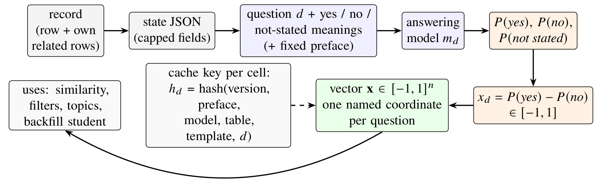
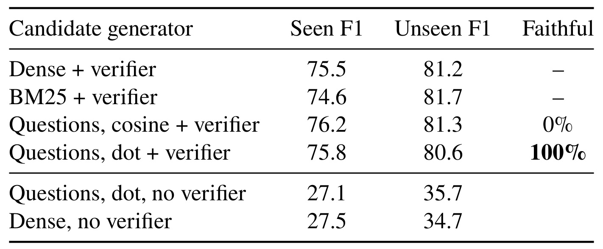
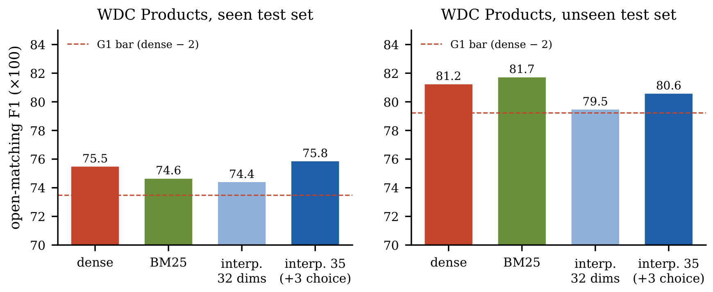
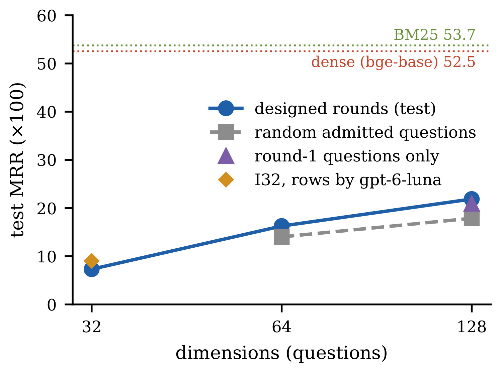
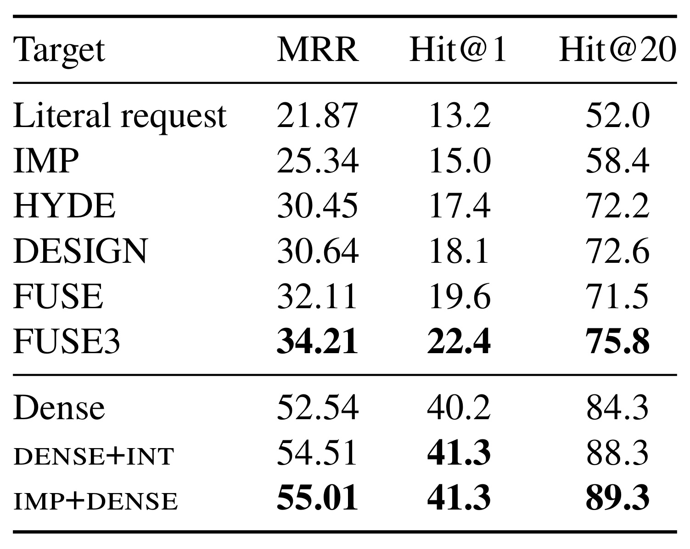
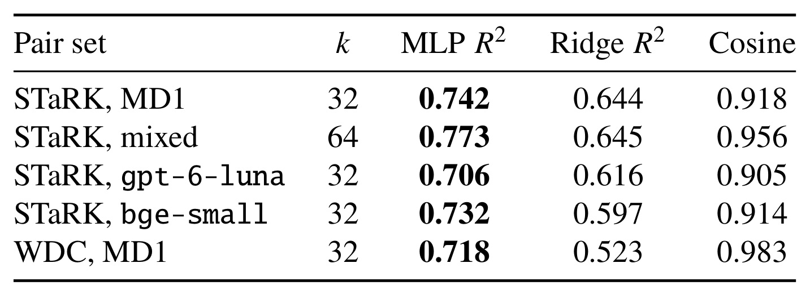
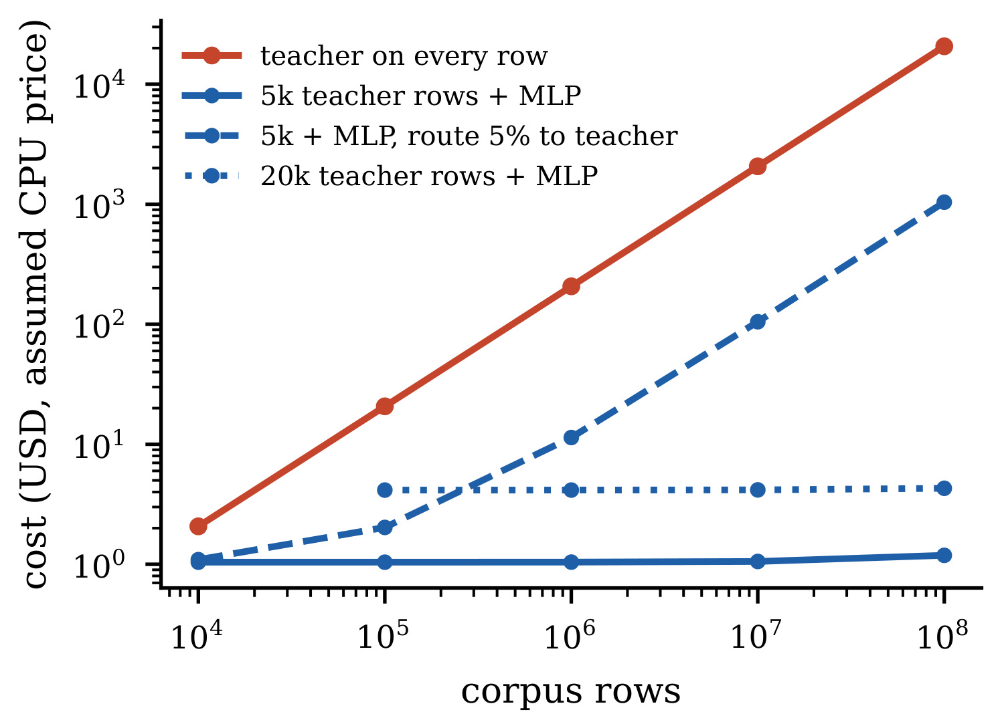
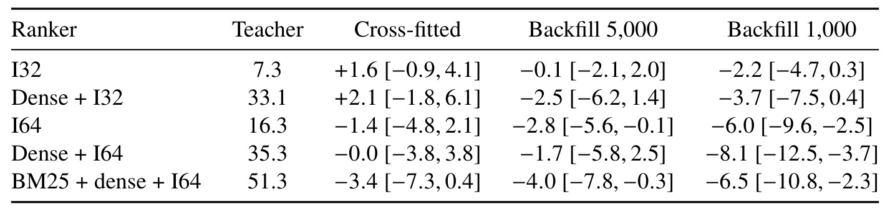

Decision Columns as an Index: Interpretable Embeddings for Explainable Entity Matching and Search
微软的 Aadharsh Kannan、Robert Bruckner 和 Philip A. Bernstein 把商品记录上的自然语言判断存成带名字的索引维度。文章用 WDC Products 检验实体匹配，用 STaRK-Amazon 检验商品搜索，同时测试怎样从已有稠密索引低成本补录这些可读坐标。2026 年 11 月 21 日北京时间提交首版，11 月 23 日列入 arXiv 公告。本轮未核验到独立代码。arXiv:2611.27910
业务系统需要判断两条记录是否描述同一实体，也要从请求中推断没有明说的需求。稠密向量能支持匹配和检索，但单个坐标缺少可审计含义，无法按属性直接过滤，新增缺失属性通常还要重新编码已有记录。
1. 背景和问题
1.1 实体识别与商品搜索的不同缺口
两条商品记录可以有几乎相同的名称、品牌、内存时钟和外观，却分别指单支内存和双条套装。实体匹配要的是同一真实商品，而常用的检索分数主要反映内容接近程度。因为输入可来自不同商家，一条标题里写总容量，另一条写单支容量乘以件数，字符接近度并不等同于规格一致。论文用三个内存商品示例建立可检查的过程，先让第一阶段找出近似但需要核对的记录，再让第二阶段判断是否同一商品。候选分数的可解释性有独立价值。审核者需要看到哪些明示属性相同，哪些属性冲突，商家没填写什么，以及这些字段分别给候选排序增加了多少分。即使最后拒绝匹配，差异也能指明该回头检查哪类商品字段。
商品搜索的失配方向正好相反。匹配是让两个相对完整的商品记录对齐，搜索的一边常常只有一句很短的自然语言。询问去更深的河里需要什么装备，可能是在找穿在身上、覆盖腿部的涉水裤，但这些商品形态没有直接写在请求里。需要从用途推断目标，再与表中记录描述关联。把两边都交给同一个属性问题编码时，商品说明可以清楚回答它是不是连身服装，请求却经常只能回答未说明。为请求端填零虽然保留了事实上的沉默，但会把潜在最有区分力的特征留在零贡献位置。因此，商品索引有足够细的属性和检索目标能利用这些属性是两个问题，系统可能在任一个步骤丢掉相关候选。
业务数据系统还有维护上的反复工作。例如发现匹配器总把不同包装规格并在一起，可以增加一列件数，重问这个属性并缩小需复核的范围。稠密编码器一般把诸多信息分布到一组坐标，很难从某一维直接筛选出数量为二的条目。定向修正可以借助额外字段、过滤器或训练新的编码器，但旧向量里的表示通常不能通过插入一项独立值就获得一个新概念。问题坐标给了团队明确的修订单位，可以逐列检查定义、记录输入、回答模型、版本与覆盖范围。例如同一词在鞋服、存储器和饮料中可指完全不同的量，审核者可以先约束问题所在的表和记录状态，再决定它是否适合参与点积或只承担过滤用途。
1.2 要区分评分可解释、事实可靠和检索有效
这项工作建立在问题应答向量思路上。与直接从通用语言模型生成的答案标记提取概率相比，本文的主要回答器给出一组三态分布。显式保留“未说明”可以避免把商品文案没写的事实当作否定。但这只对输出语义施加约定。即使返回可校准形式的概率，如果标题混入了其他规格、上下游字段的来源被误解、训练时没见过某类商品，回答仍可能偏离实际。论文也没有用商品真实属性的人工标签全面核验这些概率。一个完全可分解的距离函数可以忠实地呈现错误输入的贡献，反过来，较难解释的稠密模型也可能更准确地找到相关条目。所以文章把可解释性当成排序函数的结构性质，再用实验分别衡量答题一致性、候选召回和最终匹配。
反事实在这里有窄而明确的含义。固定两条记录和其余计算状态，把某个问题对应的分项移除，再看总分变化是否与显示的贡献一致。比如套装问题在两个相反的确定答案下给出负贡献，移除它使候选分数上升。如果由此改变候选集合，或者单独运行第二阶段发现其他字段强烈冲突，最终匹配决定可以不同。这个检查能让审核者复核给分代数，无法替代按实际商品事实判断任何决定正确与否，也不能把同一套说明归因到后置核验模型内部。良好的系统呈现应显示证据是来自候选阶段、直接核验阶段还是人工录入字段，避免把三个层级共用一个“匹配原因”标签。
论文提出三组成对问题。第一，在公开商品匹配上固定核验器，只改变候选来源，能否在接近强稠密基线时提供精确的候选理由。第二，在公开购物搜索上，增加按失败设计的问题是否优于增加同数量的合格随机问题，检索失败又有多少来自请求侧。第三，已有索引往往已计算了数十万到数百万条商品向量，是否能只问少量样本的全部问题，再训练轻量学生填剩下的记录。第三点能降低新系统评估的起步成本，同时引入了新的故障原因。一个商品属性即使能由决策模型从原文读出，也可能从已有稠密向量里无法有效恢复。需要同时报告教师拟合、检索排序和商品分桶外推，才能识别这种损失。
这里的语义索引也可类比推荐系统中诊断用户和商品表示的两种视角。个性化检索要保留通用表示对大量弱信号的组合能力。另一方面，某些约束若对用户有直接含义，例如是否需要儿童尺码或是否包含套装，用命名维度核验会更容易定位召回错误。因商品资料缺失而赋零、因需求推断而偏离类别先验以及因业务策略拒绝结果，是不同的信号来源。把它们拆开后可以定义更具体的评估集。当前论文只涉及商品记录与搜索请求，没观察真实用户是否理解说明、据此调整请求，或这种说明是否改变线上转化。它能支持的判断应来自下面的匹配、检索和补录实验。尤其在多路召回体系中，若可读坐标只给已有候选再加分，价值体现为头部位置的更替；只有把属性索引接成独立候选来源，才可能找回所有既有通道都漏掉的条目。两种接法要不同的评价分母，第一种统计共同候选上的排序变化，第二种测全目录中新增召回与引入的近似误配。
2. 方法
2.1 问题、记录状态与三态证据坐标
问题空间由可读问题的有序列表、记录状态模板、编码方式和正权重组成。每题有键名、自然语言问题、是和否的详细语义，以及固定的缺失语义。模板取当前行和与该行直接相关的实体字段，压成有字段上限的 JSON。这样决策模型不会把无关商品的类别和描述套到当前商品。作者用统一提示前缀约束字段值为输入数据，然后把问题和该记录状态交给指定回答器。主要回答器 MD1 返回是、否、未说明三项概率。补充实验的通用模型也按结构化三态接口返回分布，作者接受概率和在一附近的小误差后重归一，拒答或缺失按零坐标处理。对需要明确选项的颜色、件数等属性，另设多选题，其编码让同选项加分、不同选项减分，未说明不加分。
符号解释：$r$ 是商品记录，$d$ 是问题编号，$p_d^+$、$p_d^-$ 和 $p_d^{\varnothing}$ 分别是是、否和未说明的概率，$x_d$ 是交给排序或过滤的带符号证据值。原文式一让方向表示支持还是反对，幅度携带相对强度。向量不保留全部三态信息，例如一对对称的是非概率和近乎确定的未说明都可能得到接近零的坐标。对会直接过滤的业务字段，可以保存原始分布及答题输入出处，避免把两种状态混作同一种缺失。匹配实验还使用硬编码，取三项中最大者后将是、否和未说明映到正一、负一与零。

Figure 1 从左上读取一条记录，输入包括同实体相关行，在进入问题接口前转成带上限的状态字段。中间的题目和回答器并非以整个商品空间为输入重算，一个问答模型可以专门回答某一类字段。右边方框先返回三项概率，往下的箭头才折叠成一维证据。多个独立单元汇总成中下方的命名向量，随后才去做相似度、过滤或训练学生。图中的盒子和缓存支路区分两类可调变量。改问题措辞、改所用模型或改状态模板，会影响由当前定义计算的答卷。只新增另一个问题时，图中没有让所有已计算坐标返回问答模型的箭头。这个拆法能把后续失败定位到源资料、问答、投影、距离函数或商品范围。状态裁切以后丢掉的细节无法靠把问题写得更具体恢复，单元缓存已经存在也不能补足原文没有的事实。图本身展示构造依赖，没有给出任何实际准确率，校验字段值和核验收益仍需要下游对照。例如对应到内存套装，原始字段可能只写了总容量。模型在套装定义要求多支时，应先找到双件证据，再给正方向；规格不完整而无法判断则走未说明，不能因容量高就输出确定为是。这正是右侧三态和下游压缩值分开的理由。回到缓存框，模板或模型变化属于已有答卷定义变化，而排序权重变化只改变已有答卷的使用方式。若联动修改列规则与排序权重，验收时应分别核对坐标输出和总分分解，才能定位哪步让某类商品候选上移，或检查排序收益是否被错误过滤抵消。
2.2 逐问题相似度分解、删除检验与列缓存
符号解释：$a,b$ 是待比较的记录，$w_d$ 是问题权重，$n$ 是问题数，$t_d$ 是第 $d$ 题的分项贡献。两边同向给正项，方向相反给负项，任一证据值为零则该题不参与。权重平方来自两边向量各乘一次权重。点积支持对分项的精确删减检验，固定其他项，删除一个问题集合，总分下降量等于被删分项的代数和。若其和为负，删除后分数上升。与标题 BM25 混合时，在混合权重固定的前提下，标题得分可作为另一命名项解释；题项的严格删除检验仍要按真正参与混分的尺度计算贡献。
符号解释：$W$ 是由各 $w_d$ 组成的对角权重矩阵，$x(a),x(b)$ 是答案向量，分母是两边加权向量的长度。固定向量时可以把总分分解到各题并使贡献相加复原余弦，然而真正删除问题会改变分母。固定分母解释组成与重算之后的删除反事实是两种运算。这个差别在问题很多都给了同向否定时尤为重要，同属“不具备某属性”仍然可给正分。个别有识别力的正项可能被成批的共享负答案掩盖，解释界面可以按含义归并，但数学上仍需保留原始贡献。
符号解释：这里把正文缓存机制写成等价记号，$v$ 为版本，$P$ 为固定前缀，$m_d$ 为该题回答器，$T$ 为表，$\tau$ 为记录状态模板，$d$ 还包含问题自身定义，$h_{\mathrm{input}}$ 是当前记录输入哈希。缓存单元可新鲜、过期或缺失，新增一题只产生新的缺失单元，改题使该题过期，改记录使受影响的答案随输入哈希变化。整个索引另绑定包含有序问题哈希、编码规则和权重的空间版本。旧答案仍可复用，索引物理结构及查询版本却要随维数重新对齐，因此增列节约的首先是已有单元的推理费用。
2.3 失败驱动增列与请求侧目标
初始问题由模型从样本记录归纳。扩展阶段聚类正确商品跌出前二十的失败请求，找记录端没有被描述的共性，再设计候选问题。筛选覆盖、拒答和冗余后，用一个较便宜的回答器预计算候选列，根据训练请求上的 MRR 增益贪心挑题。对照从同一合格题池等量随机抽取。这样可以观察选择收益，避免把更大量的问题候选或更多回答器调用直接算成“题目写得更好”。后面的请求模型更换了问题的方向。IMP 先把原请求改写为对商品的要求，再让模型预测每题的重要性。DESIGN 直接估计待购商品会被怎样标注，看到目录中每题的是答案频率，在请求沉默时以该频率为起点。HYDE 先写三条可能的商品资料，随后仍用记录端编码器决定坐标。三个虚拟记录不是新目录商品，也不充当检索金标。
符号解释：$P_d(\mathrm{essential})$ 和 $P_d(\mathrm{helpful})$ 是请求对维度 $d$ 的必要和有帮助概率，$\widehat p_d^+$ 是推断目标商品在该维度为是的概率。IMP 用前式对要求向量逐维加权再做点积，其中要求编码将否方向减半，避免把短请求的反向约束放大。DESIGN 按后式构造目标向量做余弦检索。重要性表达看重哪条属性，推断目标还猜测相关商品具体该是什么属性。对于“更深的河”这类短请求，后者可以把钓鱼、连体、长裤覆盖联系到目录商品。猜测错时也会将检索拉向目录中比例看似合理却与该用户需求无关的候选。
符号解释：$j$ 是当前请求上的排序臂，下标标识分数来源，$\mu_j,\sigma_j$ 是同一路对候选的均值和标准差，$z_j$ 在逐请求标准化后再参与线性混合。系数来自训练侧 fit 切分。HYDE 用三个假想商品与目录商品的平均余弦参评，加到 FUSE 构成 FUSE3。补充的 IMP 与稠密组合各取一份标准化分数。标准化使数值量纲可放在一起，但候选池、渠道覆盖或打分离散度改变后，权重未必仍合适。混合分数可展示各渠道份额，并在问题通道继续展开题项，稠密分量本身仍不可按此方式展开。
2.4 已有稠密索引上的多任务补录
在有旧稠密向量的表上，教师回答少量记录的全部问题。用这些成对数据训练一个多输出学生，每条稠密向量一次性产生整组坐标。论文用共享 MLP 对比多输出岭回归，将近重复和同商品报价分组隔离，避免相同内容跨训练与测试。学生有三层隐藏宽度一千零二十四、五百一十二、二百五十六，输入为已有编码器的表示，最后输出对应的全题向量。部署补录时已有教师答案保留原值，未答行才写入学生预测。更新问题数或改变教师键时，输出含义必须随版本更新，记录属于实答还是预测也影响后续审核。
符号解释：式六中的 $k$ 是蒸馏题目数，$I,\widehat I$ 分别是教师和学生的可解释向量，$\sigma_d^2$ 是该维训练集方差，$C$ 是批协方差，$\|\cdot\|_F$ 为矩阵元素平方和开方。第一项衡量逐维误差，按方差调整不同题目的量级。第二项约束整条记录向量的方向，第三项尽量保留多个问题同时成立或同时缺失的统计结构。网络从既有稠密向量读信息。若编码阶段丢了某类评论事实，更大的学生可能学到同类商品常见答案，仍不保证给冷门商品提供真实证据。低方差难题也需要从分题误差和校准监控看，而均值容易由大量常规类目主导。
3. 实验结果
3.1 数据和比较协议
WDC Products 使用困难例比例为八成的版本，共一万一千七百一十五条商家报价、两千一百六十二种商品。见过与未见两个测试集各一千条报价，对应五百对真正匹配。每条测试报价第一阶段取前五个候选，MD1 对候选配对逐一给同商品概率，采用验证集选好的判定阈值。点积按硬编码和等权问题再混标题 BM25，稠密用 BGE，另有词法对照。预定门槛还查候选前十召回差距，与最终核验取前五的指标用途不同。STaRK-Amazon 原目录有九十五万余商品，预算内测试使用两万五千九百一十九条固定候选，由所有请求已知正确商品和词法、稠密高排候选组成。测试请求两百八十一条，其中八十一条人工、两百条合成。所有方法同池对比公平，但进入池本身已借助两个强基线，不能将任何 MRR 和命中结果拿去对照全目录公开数字。
预注册的比较锁定假设、门槛和自助法种子，封闭测试每研究一次。作者区分确认、探索和描述三个证据标签。匹配原始三十二题与后加三项选择题的时间顺序，以及请求目标试验主比较和次级臂的区别，都影响对有效性的解读。题目增长按各轮规定的点估计门槛判断，不能把某一步置信区间完全高于零自动解读成整个区间高于预设的五点阈值。
3.2 实体匹配与同一 verifier

Table 4 两列 F1 分开报告见过品与未见过品，最后一列 Faithful 只描述移除定义项能不能预测候选分数变化。硬点积问题通道在固定核验器下见过品七十五点八，未见品八十点六。稠密为七十五点五和八十一点二，配对差约正零点四和负零点七，自助区间分别为负一点一到正一点九、负二点零到正零点七。方向同数据分区变化，表格支持近似持平，无法支持一致胜过稠密。相同核验器下，词法在未见品为八十一点七，说明这个实体任务的标题和后验核验本身很强。点积逐项删除检验在接受配对中全部通过，余弦全部未过。作者在删除最大正负项后重新算分，又观察到点积误差接近数值精度，余弦平均误差零点零八八。这检验既没有改验证器也没有重新评估问答属性，不能据此把最后的合并原因归给某一列。去掉核验器，点积只剩二十七点一和三十五点七，稠密也只有二十七点五和三十四点七。实用价值来自候选线索与后置判断的配合，不能用表中上半区的成绩替代直接候选匹配能力。若把方法用到会自动合并实物目录的系统，两种分数应各有阈值与人工复核位置。另一项旁证是前五召回，点积在见过品和未见品为八十八点四和九十一点二，稠密为八十四点六和九十点六。召回领先和 F1 不全面领先可同时成立，因为核验器对找回的正例可能拒绝，也可能接受高混淆负例。未见品精确率更能说明这一点，附表给点积八十一点六对稠密八十二点九，而两者召回均七十九点六。候选提名的增益应与核验阈值和误合并率分开核算。

Figure 4 的左右面板分别是见过品与未见品，纵轴从七十起画，虚线是该分区稠密 F1 减两点的原定门槛，做估计时应读数字而非柱高比例。三十二题在两图为七十四点四、七十九点五，未见品离七十九点二的门槛仅零点三；其相对稠密配对差负一点七七，区间负三点二八到负零点二六，说明初版虽按点值通过，对样本重抽并不稳。附录报告原版所有门槛同时满足的重抽比例为百分之五十三。后加存储容量、颜色和包装数，硬点积分数分别变为七十五点八和八十点六。新增三项有事先设定的验证集入选规则，但是在看到首轮测试结果后提出，重跑同一测试集提高了证据条件上的依赖。三十五题更适合作为追加复核而非第一次盲验。它显示区分近似商品的关键能够从二值问题扩展到明确的离散属性，标题份额权重从零点九降到零点四后仍有匹配表现。这个改变包含了表示、混合配置和反馈得到的字段，不能只归因于提高维数。若需确认字段本身是否在不同站点普适，应另准备未参与提议的新商品群。
3.3 新增维度与请求侧受限

Figure 2 横轴从三十二、六十四到一百二十八题，纵轴是固定池封闭测试的 MRR 乘一百。蓝线三点为七点三、十六点三、二十一点九，随机合格题灰线后两点是十四点零和十七点九。第二轮终点与随机对照的差四点零，配对区间一点八到六点二；在六十四题处对随机的二点二五则未达显著。紫三角只靠第一轮剩余候选继续挑也能接近终点，第二轮新写题并未独立贡献可确认的增益，结果指向按失败找题再按指标选题的组合，无法证明每一轮重做题库都有价值。两条参考虚线分别是词法五十三点七、稠密五十二点五，即使题增加四倍，字面问题通道远低于两条线。黄色菱形代表种子题换回答器，不能将它放到扩展蓝线里读成同一流程的额外节点。首轮增益九点零的区间六点五到十一点六，次轮五点六的区间三点二到八点二，两处的统计边界不同。这个实验更适合说明可累加坐标确实能逐步弥补词义覆盖，无法单独确定部署应使用多少题才划算。
开发集另有有意使用金标的诊断。将正确商品自己的坐标拿来查询，给予并列有利计数，六十四题可以让百分之九十七的请求在前二十找到正确商品。该操作用上了检索本来不知道的金标，意义只是探测记录空间有没有把目标商品表示出来。将请求逐题直译时，六十四题空间的开发失败中有约百分之六十一至少一题给出和正确商品冲突的方向。商品资料可能是含有判别属性的，短请求却没表达相应要求或者模型解释错了。下一组实验锁住记录向量，正好验证请求目标造法的边际影响。
3.4 推断商品目标与混合排序

Table 5 以一百二十八题记录向量固定商品端，列分别为平均倒数排名、首位命中率和前二十命中率。上半区的 Literal、IMP、HYDE、DESIGN 依次反映字面、重要性、生成假商品与直接目标推断；FUSE 将重要性与推断目标混合，FUSE3 再加假商品。确认实验 T1 对比 FUSE 三十二点一一与 IMP 二十五点三四，提升六点八，百分之九十七点五配对区间二点五到十一点二，两项预定检验分摊误差预算。FUSE 优于 IMP 的请求一百六十六条，劣于七十五条，而且 FUSE 的前二十七十一点五略低于 DESIGN 的七十二点六，高位排序和前二十召回不必同方向。下半区最重要的确认比较 T2 是稠密加入推断与假商品后五十四点五一，对照五十二点五四，前二十从八十四点三到八十八点三。MRR 差约二点零，但同口径区间负零点四到正四点三，未过预定统计门槛。表中 IMP 加稠密点值更高，属于次级臂，不应像预先锁定的 T2 一样下结论。若只读上半区会误以为解释通道足以替换稠密，如果只读下半区点值则会误以为已确认融合收益。表中的真正变化集中在对请求及其约束的解释，目录做了固定候选池限制，证据不足以支持全库召回收益预测。FUSE3 比 FUSE 的 MRR 再高二点一，首位命中从十九点六到二十二点四，属于进一步融合后的描述性差异。同时引入额外的假商品生成和记录编码步骤，服务成本不能从这一张指标表计算。论文说 DESIGN 每个请求需额外一次语言模型调用，HYDE 要一次生成加六次编码调用。若准备用某个阈值只给难请求启用，需固定触发选择以保留可比人群，再测效果、尾延迟及失败回退。
深河装备单例说明不同推断对特征的影响。相关商品第一次命中在 IMP 排第一千二百九十六，DESIGN 第一，FUSE 第二，稠密第四。推断目标给钓鱼属性零点九八五、连身属性零点八五、长裤属性零点七，而这些维度在目录上的基础比例约百分之五、二、一。由于请求允许多种正确品，模型猜测指向当例真正的商品记录并不保证相似词换到别的活动也成功。附录还给出把假商品直接用稠密编码的开发集负例，MRR 比直接稠密查询低六点四七，配对区间负十点零五到负二点九七。将潜在意图写成文字后，使用哪类商品空间投影会改变收益；即使有两个互补通道，未经调参的等权倒数排名融合也可能比原系统更差。
3.5 蒸馏质量与索引补录

Table 6 每行是一组成对稠密向量和教师答案，并报告 MLP 与岭回归逐题决定系数均值、学生与教师整向量相似度。STaRK 的三十二题 MD1 行为零点七四二对零点六四四，混合教师的六十四题为零点七七三对零点六四五。WDC 的整向量余弦高达零点九八三，逐题决定系数却只有零点七一八。高余弦可能共享大量低区分性的答案，不表示少见且重要的属性同样可靠。行间也不宜套用同一个“题数越多越好”因果关系，混合教师和题组成发生变化。另用三百八十四维小型编码器的输入时 STaRK 三十二题为零点七三二，说明对这组题而言较小输入也保留了不少信息。拆分属性后类别描述往往很容易预测，但来自评论的可靠性、真实尺寸等主观判断在稠密向量中更难读回。留整类别测试的微平均值零点四九五，对相同规模随机切分零点七三二，STaRK 拟合器直接移去 WDC 本体后为负零点二六八。负值表示平方误差比均值预测大，不是相似度为负。已有向量可减少同域补录成本，但这种学生不具备默认迁移能力。若题目对应少数重要商品，还须逐题用业务真值验证召回和错标，表格仅说明对教师输出的拟合。尤其 WDC 有些属性只有百分之一以内的正例，附录显示这些问题的决定系数至多约零点零二，极端例还为负。若模型被用于阻断不合规匹配，微小群组不能依赖跨列平均值获得通过；可以为高风险属性保留教师答卷或人工录入真值，且做一次错误候选沿最终核验的穿透检查。样本数低于约两千时岭回归还可能优于 MLP，因此形态更灵活的模型也依赖足够的标注密度。

Figure 3 横纵都用对数，按目录行数比较全教师、五千教师样本、两万教师样本，以及五千样本和额外百分之五定向回教师四组。红线随行数大体成比例。固定样本蓝实线在相当长的范围受一次性标注主导，回教师的虚线在目录扩张后明显更陡。作者用每行教师实测零点零零零二零七美元和假定的 CPU 价格，在百万行上外推一美元零四分对二百零七美元十三分，约二百分之一。一条执行通道外推耗时三点八小时对七百六十小时。这个分母设定已有稠密向量并以教师逐行答同等题目为参照，没有纳入稠密向量冷启动、网络重试、索引写入、上游字段治理或线上请求模型成本。回教师比例稍高，蓝虚线随规模的增长会迅速压缩节约空间。该图适合用于确定何时有经济理由先做样本实验，以及估计学生错误过多时重新答题的成本；它不构成实际服务吞吐、尾延迟或总拥有成本的测量。若业务问题更新频繁，旧空间中可复用的答案粒度决定了何时教师成本重新付出，千万条语料也不意味着可批量复用一次标注。应先确认稠密输入向量中的关键信息没有在压缩阶段被丢弃，再比较加样本、修补单列或提高回教师比例这三类预算。图上蓝点与蓝虚线的交叉已经说明，固定的较大样本集和按行增长的回退会随目录规模产生差异，适合按真实错例比例重新估算。图中的成本按给定标注配置固定，和上表改变答题规模或教师组成时不是同一个估算口径。

Table 7 先给教师向量的各排序臂基线，再给交叉拟合、保留五千与一千教师行后的 MRR 差，括号为两百八十一请求上的百分之九十五配对区间。交叉拟合每行的学生没见过该行，仍使用其他折得到的大批标签，五千样本条件域内可用的教师信息更少，二者不能互换。五千行时纯六十四题掉二点八，区间负五点六到负零点一；稀疏、稠密和题目三路混合掉四点零，区间负七点八到负零点三。其他五千样本臂区间包含零，并不证明严格等效。降到一千行后稠密加六十四题掉八点一，配对区间负十二点五到负三点七，表明教师样本量会通过题目排序传到下游，即使融合时主通道的向量没有改。另需沿用每行自身的教师基线，表中的稠密加 I64 三十五点三与前面一百二十八题请求重排表的单独稠密五十二点五四属于不同配置，不能跨表当作绝对跌幅。只有把下游检索变化与教师拟合、商品类别和实际标注预算放在一张验证记录里，才知道学生在哪些商品段值得启用。表里的混合指标也能帮助发现课堂式蒸馏和线上排序目标的差异。带更多教师行通常缩小预测误差，但某次配对比较仍可能由于最前几个候选次序的轻微变化而对 MRR 影响更大。按请求是否需要罕见属性、是否出现跨域商品、是否由模型推断隐式商品切开看，才能找出补录学生在哪一环节付出了可见的质量代价。最终验证可保留教师和学生各自的排序版本，用同一批请求报告回教师前后的实际结果。
4. 总结
4.1 可以直接复用的判据
可读题项有机会成为已有稠密检索旁的证据渠道。当任务要求审核两条记录为何被提名，硬点积能把每题与候选总分的关系落实成一项可重算的测试。商品搜索的请求问题需要明确归到字段缺失、用户没说、意图扩展或答案不可靠，选择相应处理路径。若先让语言模型推断目录中的目标商品，仍应看它是否符合主要检索指标和潜在暴露风险，而不能只通过一条看似合理的改写验收。研究没有推翻强词法或稠密商品召回，两类基线把主要候选拉进同一池；它建立的是可见属性如何提供附加证据及怎样衡量这部分证据。
4.2 局限与后续检查
- 群组的真实含义需要独立核验。 论文的逐题得分是对教师输出的忠实呈现。附录另用语言模型抽样核对，定答时一致性更强，模型对“未说明”的处理仍不相同，也没有人工金标验证整个坐标空间。自动合并商品时，字段争议与错误决策的责任归属依然需要完整的上游证据。
- 搜索质量有目录和候选分布约束。 两万五千余条测试池含所有已标注正例和两类文本搜索高排候选，真实开放目录的长尾、缺标签和近似错商品可能一起改变结果。人工与合成请求比例也限制了对用户流量结构的直接推断，T2 的置信区间覆盖零尤其需要继续采样。
- 存储可扩与近邻结构可在线更新是两个事件。 增题保留旧答卷，仍需为新列补新值、更新索引版本并使请求同步使用同一个有序空间。某些搜索引擎能用增量重建，具体资源消耗、回滚机制和上线更新期间候选抖动未在论文测量。
- 便宜蒸馏只能复用原向量内的信息。 同域随机切分的回归置信度不能直接覆盖新品类和新商家域，且候选池扩张后错误行回教师的实际比例未验证。成本估算已有编码器和语料，仍需额外记录问答调用、延迟、账单与人工判断成本。
后续可以用三组小实验验证迁移。第一，从新商家分区抽取成对近重复商品，请人工标套装、件数、容量以及原因证据，固定后置核验器，比较候选域和删除检验，单列从正证据误变成否定的样本。第二，将长尾短请求单独放入全目录，预先固定单通道和融合的主指标，并记录意图推断错误、过滤过严以及高相关商品被原始召回遮蔽的比例。第三，用同一教师固定回填新类别和老类别的样本，按难题记录学生差异和回教师覆盖，检验题项新鲜度与线上搜索变化，再评估索引维护的实际资源。这样可以沿同一链路定位问题来自表达、付费补录、候选空间还是最终核验。